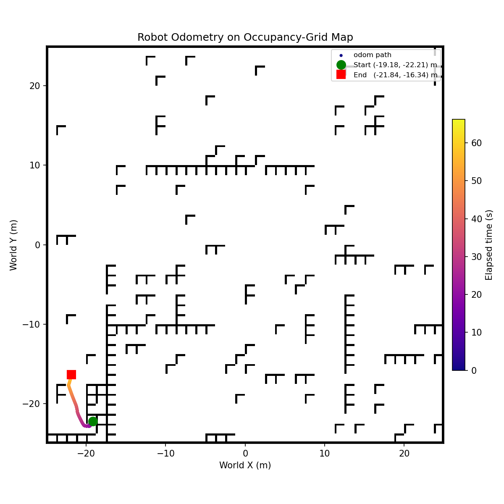
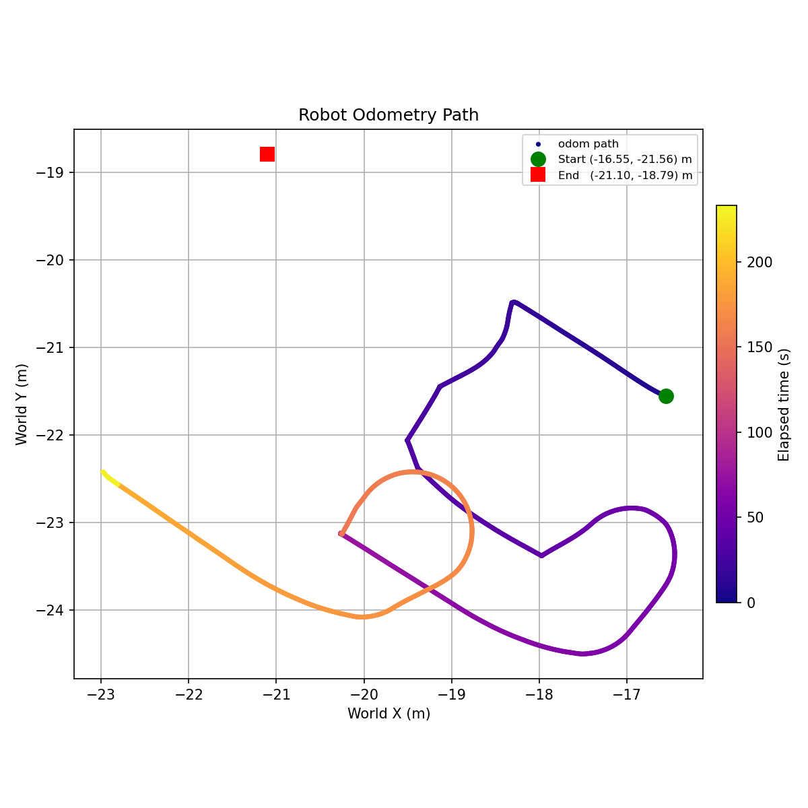

ENAE450 Robotics Programming · Team project
Autonomous Maze Navigation
- ROS 2
- Python
- TurtleBot 4
- LiDAR
- SLAM
- AMCL
- Nav2
- RViz
- ros2 bag

Overview
A Spring 2026 team project for ENAE450 Robotics Programming, built with two classmates. A TurtleBot 4 had to escape a maze in two timed races — one where it could map the maze first, and one where it had to explore with no map — and finish each with a 180° turn at the exit. The three of us wrote and debugged the code together during lab sessions.
Video
Watch the robot run (Google Drive)
Mapped race: SLAM, AMCL, and Nav2
We used the standard ROS 2 navigation stack on the TurtleBot 4:
- SLAM (simultaneous localization and mapping) builds a map from LiDAR scans and odometry. We teleoperated the robot through the maze until the whole maze was mapped, then saved the map.
- AMCL (Adaptive Monte Carlo Localization) finds the robot on that map with a particle filter: it maintains many guesses (particles) of the robot's position and converges on the ones that match what the LiDAR sees. We seeded it with a pose estimate in RViz.
- Nav2 plans and drives a path to a goal set in RViz, using a costmap that marks obstacles and inflates them by the robot's radius so the robot doesn't clip walls.

Unmapped race: LiDAR wall follower
We wrote a ROS 2 node that reads LiDAR scans and publishes velocity commands to follow the right-hand wall at a tuned distance.
- Heading estimation: comparing the distance straight to the right with the distance 45° ahead of right gives the robot's angle relative to the wall, which it corrects to stay parallel. Along the way we discovered the LiDAR is mounted rotated, so “forward” in its data is −π/2, not 0.
- State machine: the robot moves through three states: wall following, U-turn, and finished. Within wall following, checks run in priority order: avoid an imminent collision; turn left when blocked ahead, after confirming the front-left is clear; steer right to find a wall when there isn't one; otherwise, follow the wall.
- Exit detection: when nothing is in view ahead, the robot assumes it has left the maze and turns around. We narrowed that forward window to about 97° so the wall it was turning past wouldn't block detection.

Retrospective
What worked
- The right-hand wall follower worked well and tracked the wall reliably early on.
- The robot originally looked slightly ahead-right to anticipate turns, but that made it clip the wall on right turns, so we switched to looking directly right.
- Left turns worked early, except in “alleyway” situations where the robot essentially has to turn around. Adding the front-left clearance check fixed this.
What didn't work
- An earlier approach drove toward the most open space. It couldn't consistently tell where it had been, so it went in circles, treating the way back as a possible exit.
- Without a launch file for the mapped race, launching SLAM, RViz, map saving, localization, and Nav2 by hand for every goal was slow and error-prone.
- The unmapped end sequence only worked some of the time; it was hard to tell maze walls apart from unrelated objects near the maze opening.
- We tried a “cleared exit counter” that required several consecutive empty readings before the U-turn. False positives inside the maze turned out to be rare, so it wasn't needed.
What we'd change
- Write a launch file that runs each step of the mapped race in sequence, to save time and make the steps reliable and correctly ordered.
- Improve goal-seeking for the unmapped race by ruling out problematic goals such as “back the way you came.”
- Make exit detection distinguish objects that appear consistently over a longer window (walls) from ones that appear briefly (say, a chair leg visible from the exit).